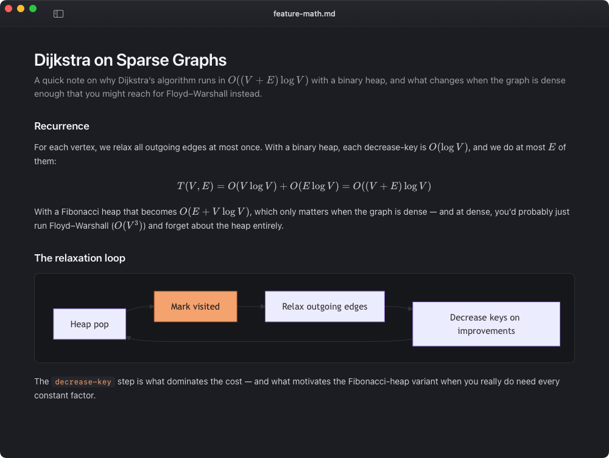
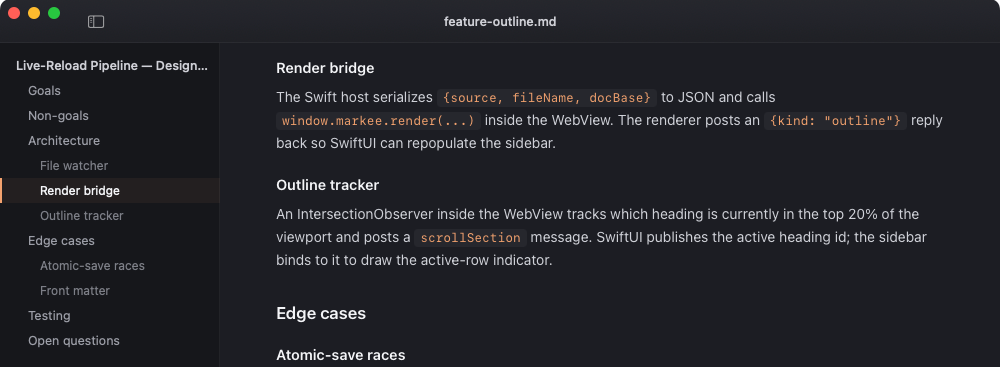
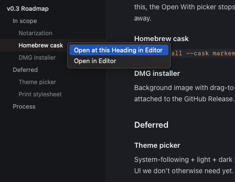

Lives in your editor's shadow
Use Vim, Cursor, Zed, VS Code — whatever you already love. Markee watches the file on disk and updates the preview the moment you save. Nothing to learn.
Renders the whole stack
GitHub-flavored Markdown, KaTeX math, Mermaid diagrams, highlight.js code, footnotes, definition lists, task lists, YAML front matter. All offline, all in a sandboxed WebView.
Open at any heading
Press ⌥⌘E or right-click an outline row to jump your editor to that heading's source line. Auto-detects Cursor, Code, Zed, Sublime, TextMate, MacVim, and Helix.
Features
Built for the way developers actually read Markdown.

Math and diagrams, rendered in the WebView
KaTeX for inline and display equations, Mermaid for graphs and sequence diagrams, highlight.js for syntax. Every renderer is vendored at build time and runs locally — no network, no telemetry.

An outline that tracks where you are
The sidebar always knows the current heading — driven by an IntersectionObserver inside the WebView posting back to the SwiftUI host. Toggle the outline with ⌘⌥\ and click any row to jump.

Open at any heading, in your editor
Press ⌥⌘E or right-click an outline row to jump your editor to that heading's source line. Markee auto-detects Cursor, VS Code, Zed, Sublime, TextMate, MacVim, and Helix. Override with defaults write com.markee.preview editor "<name>".
Install
Two steps. No Homebrew tap, no notarization wait.
-
1
Download
Markee.app.zipfrom the latest releaseUnzip it, drag
Download v0.2.0Markee.appto/Applications. -
2
First launch — clear the quarantine flag
Markee is ad-hoc signed, not yet notarized with an Apple Developer ID. On first launch macOS will warn you. Two ways past it:
xattr -dr com.apple.quarantine /Applications/Markee.app
Prefer to build it yourself? From-source instructions on GitHub — it's three Make targets.